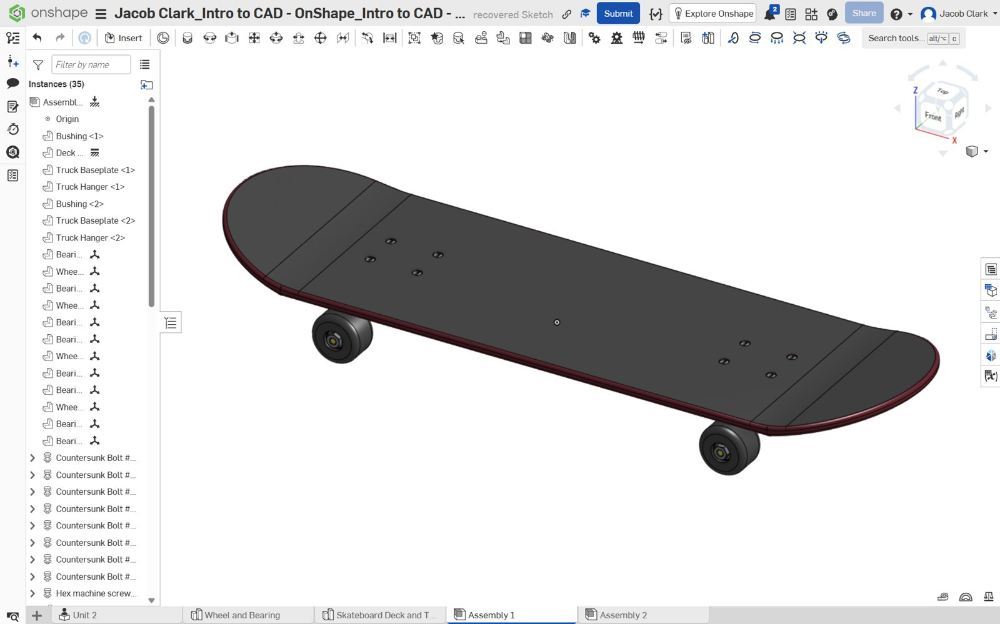

Work
Projects
Computer builds and CAD coursework, with photographs and process documentation.

Personal PC & Workstation ↗
Researched components for a 1440p gaming setup, assembled the PC, and put together the desk and peripherals.

PC Build for Josh ↗
Selected and assembled a desktop PC for a friend while explaining the parts and assembly process.

Skateboard CAD Modeling ↗
Modeled skateboard components and completed an assembly in Onshape for ENGR 1000.